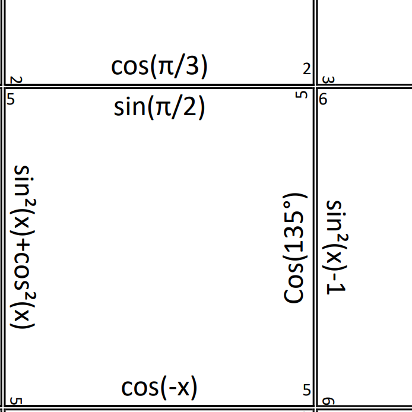
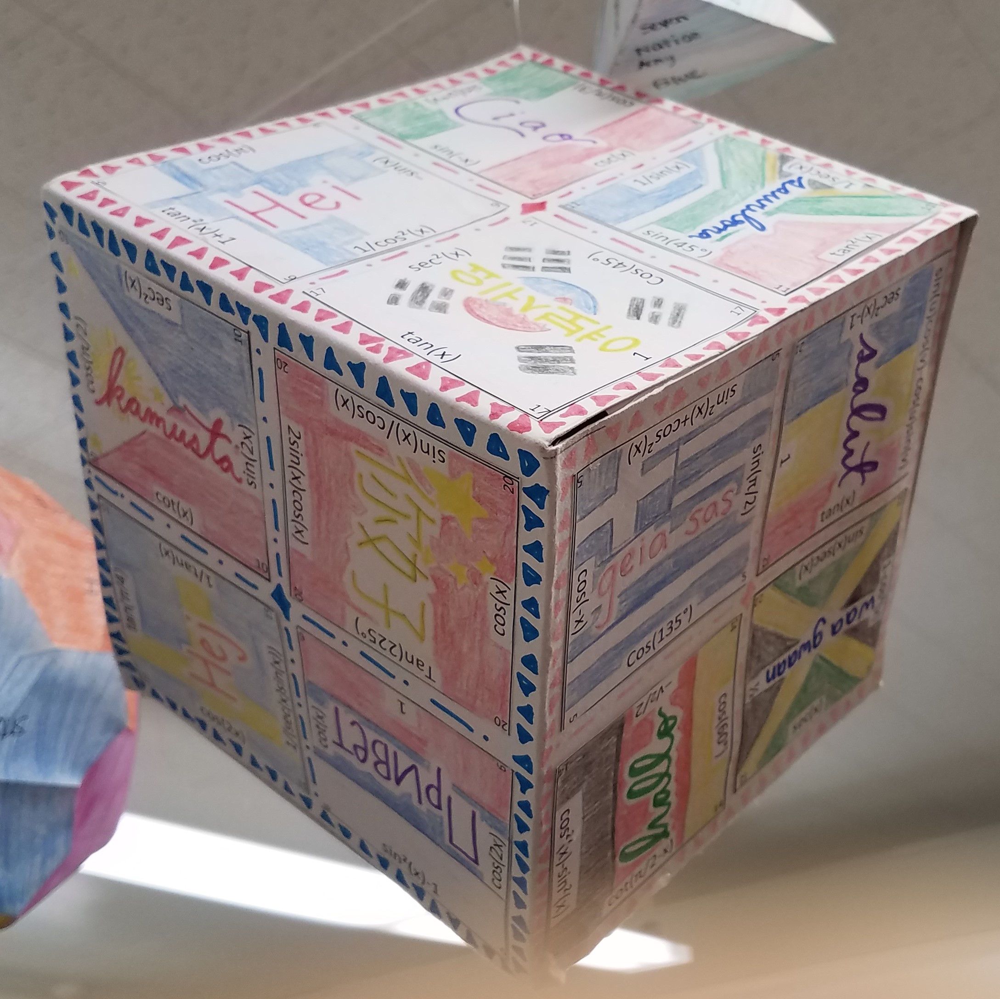
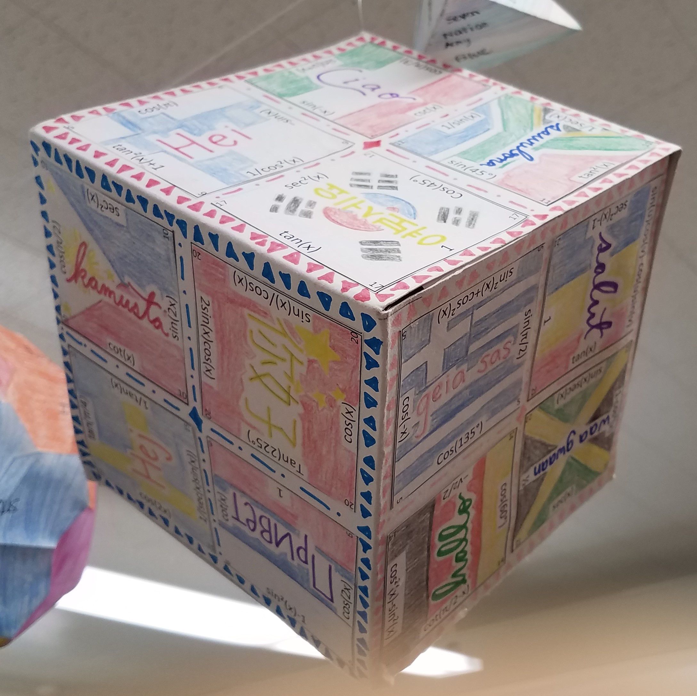

Trigonometry Puzzle Cube
A puzzle project I created for Trigonometry students to practice Trig identities.Premise

I did part of my student teaching in a Trigonometry class and was tasked with designing
a project for them. Since I like
puzzles, I thought it would be fun to create a puzzle cube to help them practice their
Trig identities and of course,
logic.
How it works
Students are given 24 squares with a Trig expression (sin, cos, tan, etc.) on each side
of the square. They must create
a cube (4 squares on each face) such that the expression on each edge of a square must
be equivalent to the expression
on the edge of the square it is touching. There are many different equivalent
expressions for any given Trig identity,
but only one combination that correctly makes the cube, that's where the logic comes in.
Students are encouraged to work in pairs and are given about 1-2 weeks to complete
outside of class.
When they have successfully created the cube, they are then encouraged to color and
decorate it so it can be displayed
in class.
 


*Finished Trig Cube Projects
Reflection
This is one of the first projects I created myself from scratch and I really enjoyed it.
Based on student feedback, it
definitely challenged them, but also helped them to learn their Trig identities better.
My most important take away from
this project was that good projects take a lot of time to create, but are worth it in
the end because they are great
learning experiences for the students. Also, you can use them over and over again. In
fact, my dad is now a Trigonometry
teacher and uses this project every year.